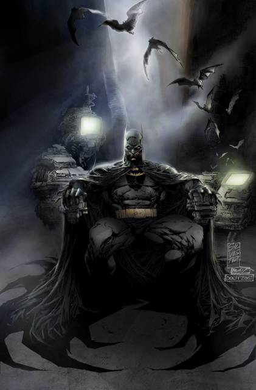

From Wikipedia, the free encyclopedia, https://en.wikipedia.org/wiki/BatmanBatman is a fictional superhero appearing in American comic books published by DC Comics. The character was created by artist Bob Kane and writer Bill Finger, and first appeared in Detective Comics #27 (1939). Originally named the "Bat-Man", the character is also referred to by such epithets as the Caped Crusader, the Dark Knight, and the World's Greatest Detective.
Batman's secret identity is Bruce Wayne, a wealthy American playboy, philanthropist, and owner of Wayne Enterprises. After witnessing the murder of his parents Dr. Thomas Wayne and Martha Wayne as a child, he swore vengeance against criminals, an oath tempered by a sense of justice. Bruce Wayne trains himself physically and intellectually and crafts a bat-inspired persona to fight crime.
Batman operates in the fictional Gotham City with assistance from various supporting characters, including his butler Alfred, police commissioner Gordon, and vigilante allies such as Robin. Unlike most superheroes, Batman does not possess any superpowers; rather, he relies on his genius intellect, physical prowess, martial arts abilities, detective skills, science and technology, vast wealth, intimidation, and indomitable will. A large assortment of villains make up Batman's rogues gallery, including his archenemy, the Joker.
The character became popular soon after his introduction in 1939 and gained his own comic book title, Batman, the following year. As the decades went on, differing interpretations of the character emerged. The late 1960s Batman television series used a camp aesthetic, which continued to be associated with the character for years after the show ended. Various creators worked to return the character to his dark roots, culminating in 1986 with The Dark Knight Returns by Frank Miller. The success of Warner Bros.' live-action Batman feature films have helped maintain the public's interest in the character.
An American cultural icon, Batman has been licensed and adapted into a variety of media, from radio to television and film, and appears on various merchandise sold all over the world, such as toys and video games. The character has also intrigued psychiatrists, with many trying to understand the character's psyche. In 2015, FanSided ranked Batman as number one on their list of "50 Greatest Super Heroes In Comic Book History". Kevin Conroy, Bruce Greenwood, Peter Weller, Anthony Ruivivar, Jason O'Mara, and Will Arnett, among others, have provided the character's voice for animated adaptations. Batman has been depicted in both film and television by Lewis Wilson, Robert Lowery, Adam West, Michael Keaton, Val Kilmer, George Clooney, Christian Bale, and Ben Affleck.